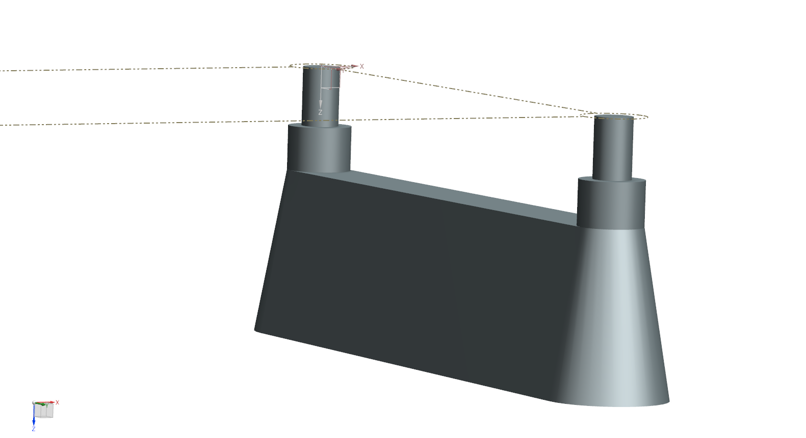
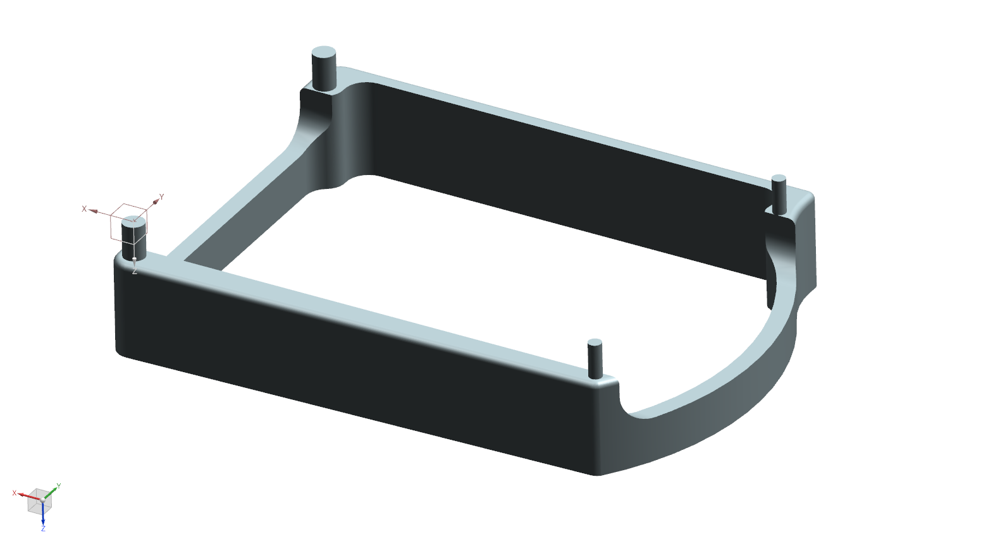
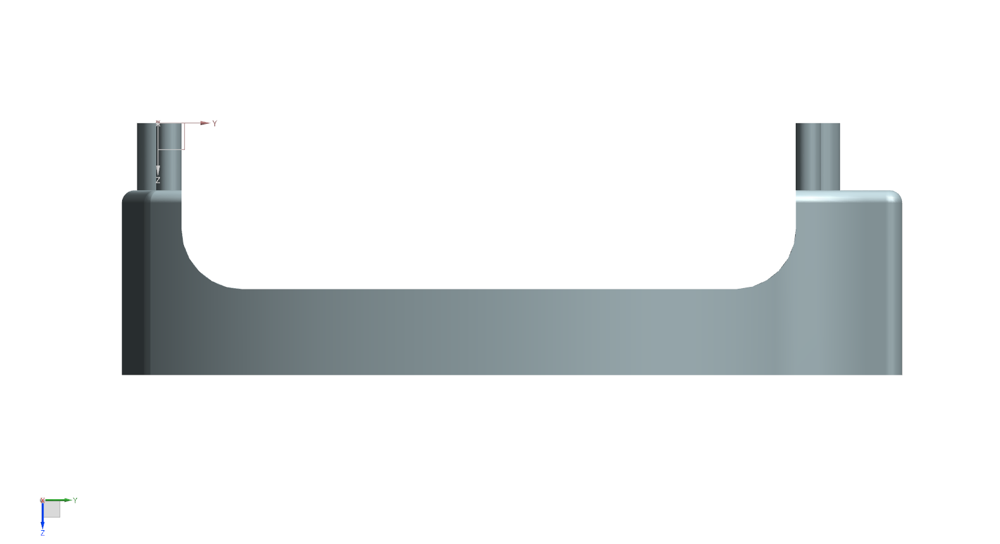
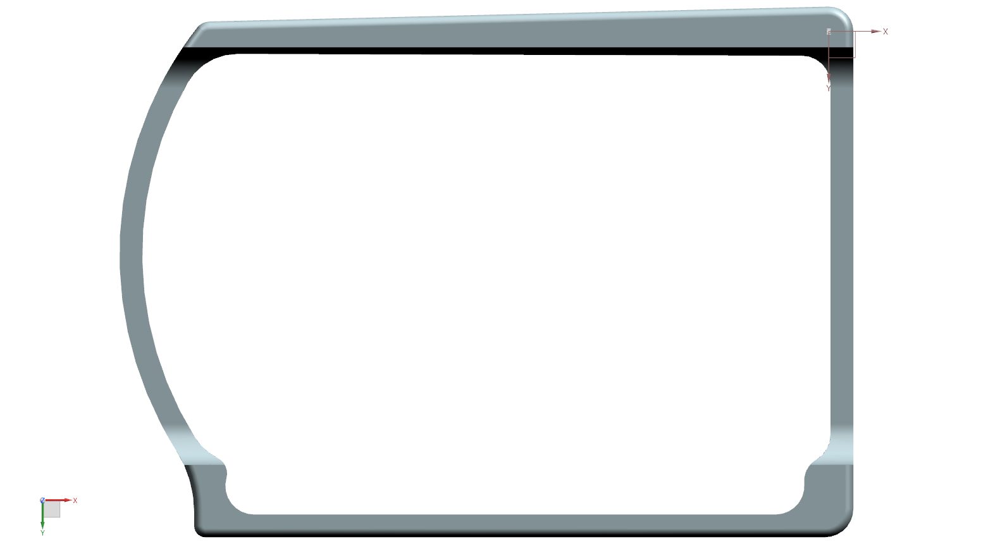
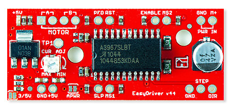
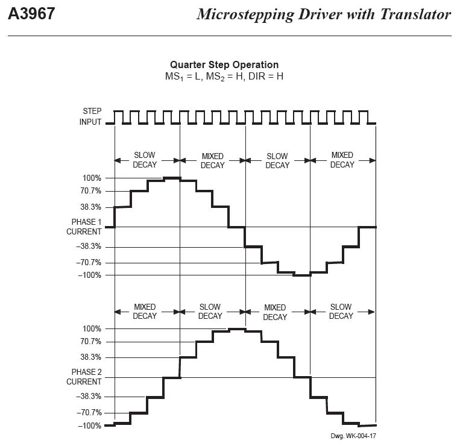

Integrating Physics-based and Data-Driven Methods to Accurately Model Haptic Textures
26/03/2018 MeetingLast Definitions
- Force Will be induced with springs
- Initial measurements without force sensor
- Track movement and velocity with camera (~250 fps)
To-Do
- Design A base that holds up the Mechanism.
- Adapt Accelerometer [Ongoing]
- Search for a feasible force sensor
- Buy a Driver
Prototype 1


Prototype 2


Prototype 3 [Current]



Driver
EasyDriver Spark Fun V4.5
Microstepping 1/8

